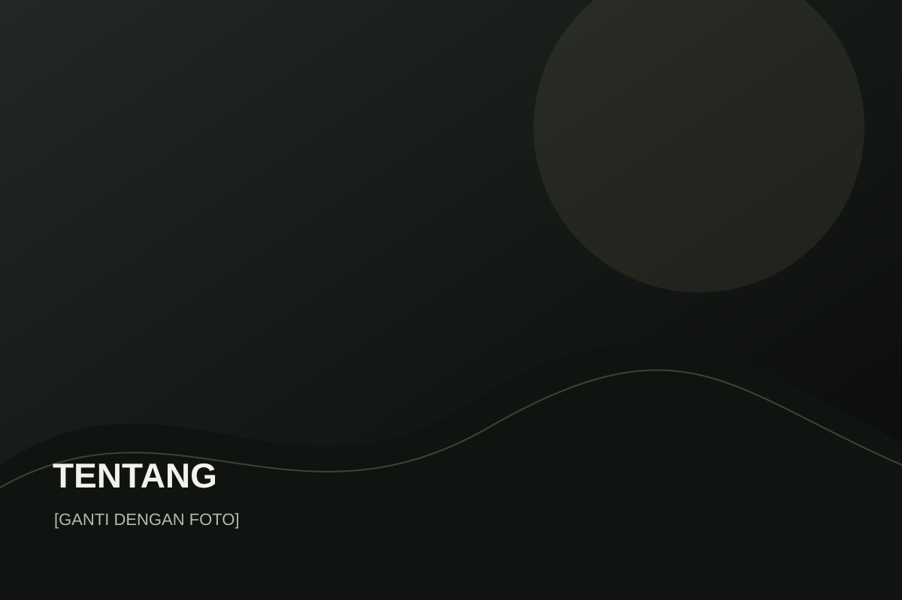
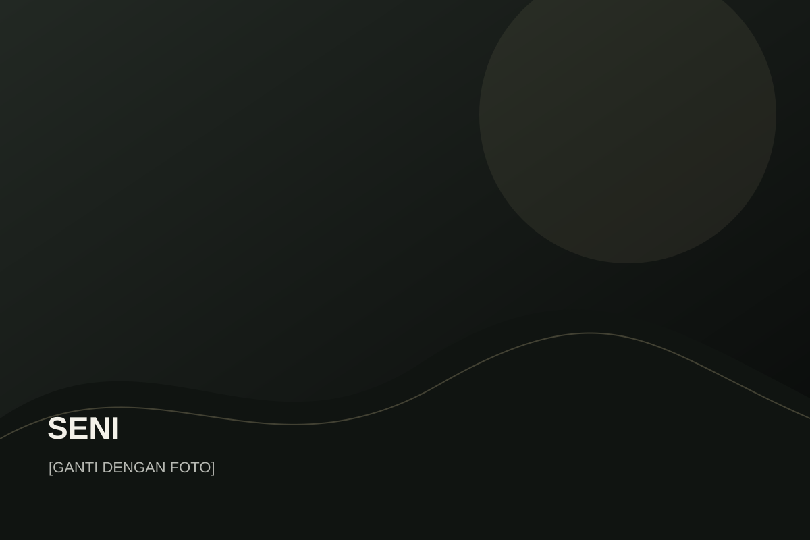
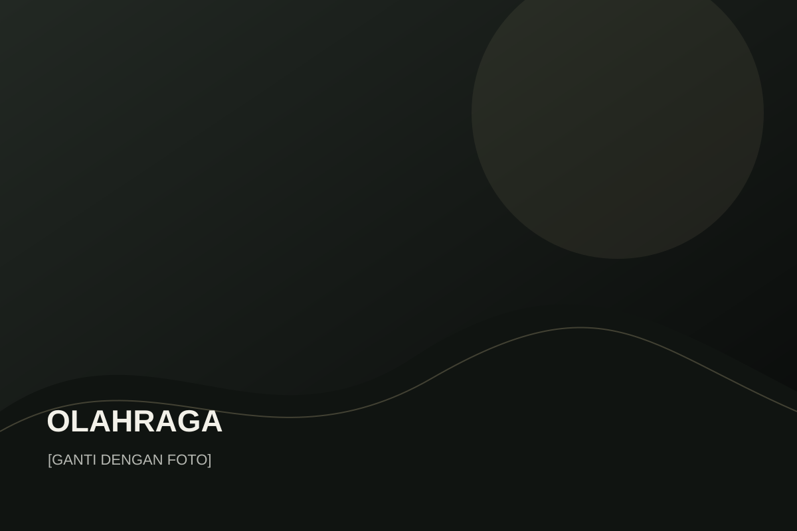

Peringatan Hari Pahlawan Nasional
Placeholder deskripsi kegiatan sekolah.
BukaSMP Negeri 1 Porong hadir sebagai ruang belajar, berkarya, dan bertumbuh—dengan semangat beriman, berprestasi, terampil, dan berbudaya lingkungan.

01 / Tentang sekolahSMP Negeri 1 Porong berdiri sejak 1976 dan berkembang sebagai sekolah berstandar nasional. Sekolah memiliki 27 ruang kelas, laboratorium komputer dan IPA, ruang kesenian, perpustakaan digital dan konvensional, serta fasilitas olahraga.
Data konten diambil sebagai referensi dari sumber sekolah yang diberikan. Ganti foto, narasi, dan detail yang ingin diperbarui melalui file HTML/JS.
Selengkapnya tentang sekolahPerpustakaan, laboratorium, olahraga, dan ruang-ruang pendukung menjadi bagian dari pengalaman belajar sehari-hari.


Program, proyek, peringatan, dan aktivitas siswa menjadi bagian dari perjalanan sekolah.
Beberapa pencapaian yang tersedia pada sumber data sekolah.

Guru SMPN 1 Porong meraih posisi Top 10 dari total 216 peserta.
Prestasi olahraga tingkat provinsi.
Dalam ajang KAPOLRI Cup 6.
Tambahkan data prestasi lain di halaman prestasi.html.
Gunakan section ini untuk satu foto sekolah yang paling kuat secara emosional—tanpa banyak elemen di atasnya.
Homepage hanya menampilkan beberapa contoh. Daftar lengkap tersedia di halaman ekstrakurikuler.
Teknologi, kreativitas, dan problem solving.

SeniKreativitas
OlahragaKebugaranKlik foto untuk membuka lightbox. Semua placeholder dapat diganti dengan file foto sekolah.